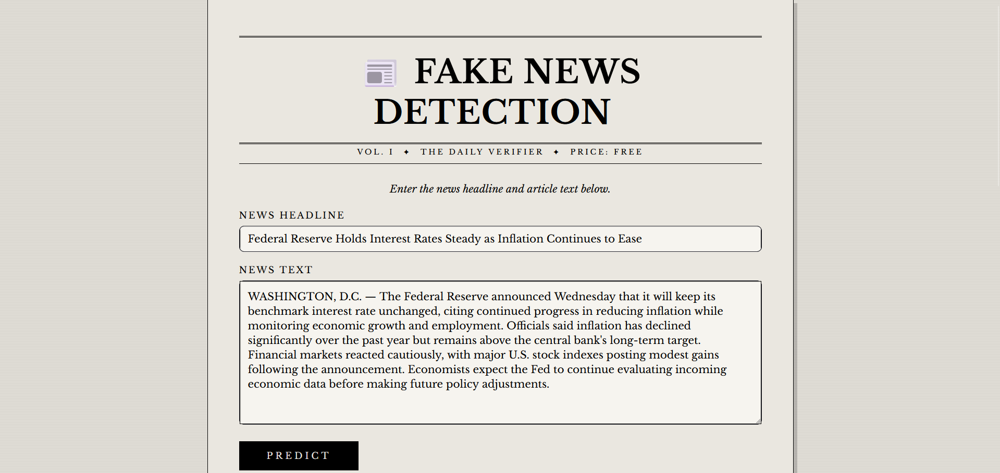
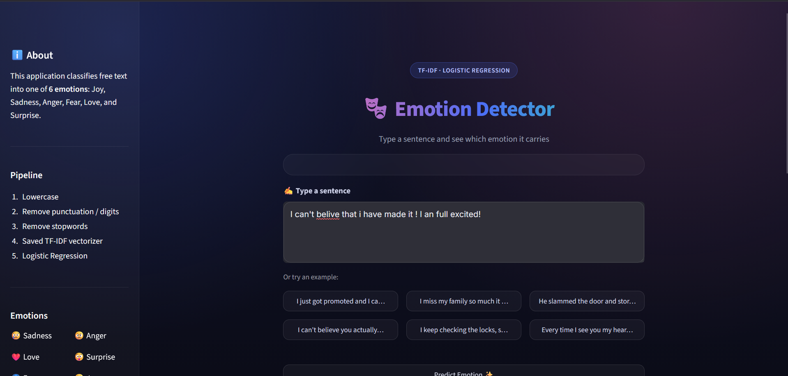

Experience
Basics Of Python
- Python
- Functions
- Numpy
- Pandas
I successfully completed a 45-day internship and training program focused on Python fundamentals, along with practical learning in NumPy and Pandas. During this training, I strengthened my programming skills, learned to work with data efficiently, and gained hands-on experience in data manipulation and analysis using Python libraries. This internship helped me build a strong foundation in Python and develop practical skills that will support my journey in Artificial Intelligence and Machine Learning.
Machine Learning With Python
- Matplotlib
- Seaborn
- Supervised Machine Learning
- Unsupervised Machine Learning
I successfully completed a 45-day Machine Learning training program, where I developed a strong understanding of fundamental machine learning concepts and their practical applications. During the training, I learned about data preprocessing, exploratory data analysis, feature engineering, supervised and unsupervised learning, and model evaluation. I also gained hands-on experience in building and evaluating machine learning models using Python and popular libraries such as NumPy, Pandas, and Scikit-learn. This training helped me strengthen my practical skills and provided valuable experience in developing machine learning solutions for real-world problems.
Projects

Fake News Detection Model
- Natural Language Processing
- Logistic Regression
- Bag-of-Words
News Detectionis an NLP-based machine learning project that classifies news articles as Fake or Real. It uses text preprocessing techniques and a trained classification model to analyze the content of news headlines and articles. The current version is trained on a fake and real news dataset, making it most accurate for U.S. news content. The project provides fast and reliable predictions through a simple and user-friendly interface. It demonstrates the practical application of Natural Language Processing and Machine Learning in combating online misinformation.
View
Insurance Charges Prediction Model
- Sklearn
- Linear Regression
- Joblib
Insurance Charges Prediction is a machine learning project that predicts medical insurance charges based on various factors such as age, gender, BMI, number of children, smoking status, and region. The project involves data preprocessing, exploratory data analysis, feature encoding, and training a regression model to understand the relationship between individual characteristics and insurance costs. By analyzing these factors, the model can estimate expected insurance charges for new customers, demonstrating the practical application of machine learning and data analysis in the insurance domain.
View
Mall Customers Segmentation Model
- Python
- Stremlit
- K-Means Clusturing
Mall Customer Segmentation is an unsupervised machine learning project that uses customer demographic and spending data to identify distinct customer groups based on their purchasing behavior. Using clustering techniques, the project analyzes patterns such as age, annual income, and spending habits to segment customers into meaningful groups. This helps businesses better understand their customers, identify target segments, and develop more effective marketing strategies and personalized services.
View
Heart Disease Prediction Model
- Supervised Machine Learning
- Stremlit
- Logistic Regression
Heart Disease Prediction is a supervised machine learning project that uses patient medical and clinical data to predict the likelihood of heart disease. Using Logistic Regression, the project analyzes various health-related features such as age, blood pressure, cholesterol levels, chest pain type, maximum heart rate, and other medical attributes to classify patients into different risk categories. This helps demonstrate how machine learning can be applied to healthcare data for early risk assessment and supports data-driven insights that may assist healthcare professionals in identifying individuals who could benefit from further medical evaluation.
View
Emotion Detection Model
- TF-ID Vectorizer
- Joblib
- Multinominal Naive Bias
Emotion Detection Model is a Natural Language Processing (NLP) project that identifies the emotion expressed in a given text. The model analyzes user input and classifies it into emotions such as Joy, Sadness, Anger, Fear, Love, and Surpriseusing machine learning techniques. It applies text preprocessing methods, including tokenization and vectorization, to improve prediction accuracy. The system provides quick and accurate emotion classification through a simple and user-friendly interface. This project demonstrates the practical use of NLP and Machine Learning in sentiment analysis, customer feedback analysis, and human-computer interaction applications.
View
Personal Blog Website
- Flask
- SQLAlchemy
- Vercel
I developed a personal blog website using Flask, providing a simple and dynamic platform for creating and displaying blog posts. The project uses SQLAlchemy for database management, allowing blog content and user data to be efficiently stored and managed. I also implemented random image rendering to dynamically display different images across the website, enhancing the visual experience and making each visit more engaging. This project helped me gain practical experience in Flask web development, backend programming, database integration, and dynamic content rendering.
View